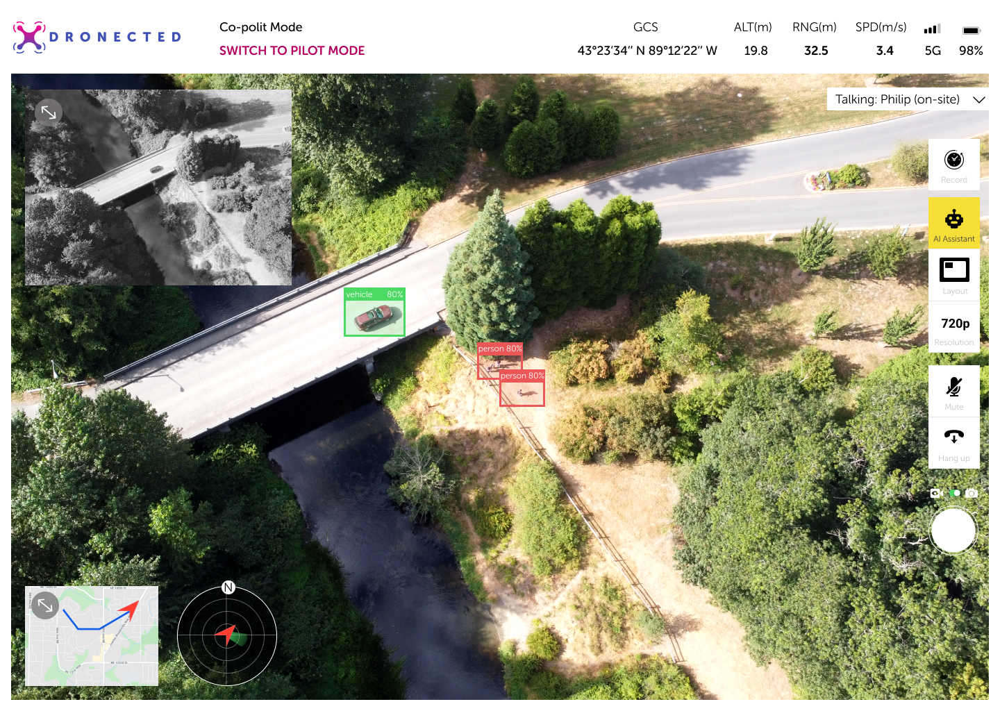

Dronected is a cellular-connected drone solution for search and rescue teams. The drone equipped with thermal camera and microphone and it works with an observation website for video-streaming and ML human detection.
Time:
June 2020 - Present
Role:
Lead the primary user research and user evaluation, translate insights into actionable design solutions;
In charge of UX design, designed the website and mobile interface and developed the front-end website;
Team:
Ke Wang: UX Researcher and Designer
Isaac Boger: Electronic Engineer
Wenbo Zhong: Software Engineer
Justin Ho: Mechanical Engineer
ChunAn Ku: Business Manager and Software Engineer
Sponsor:
Overview
Problem
Drones are an increasingly vital tool for search and rescue, but they still have serious limitations. They are error prone and time consuming manual video analysis, limitation by terrain blocking signals and extremely high cost to upgrade.
Solution
Our project seeks to allow a remote cooperative workflow and crowdsourced upgrades for existing search and rescue drones using the high-bandwidth and high coverage of emerging 5G networks.
The solution includes a website allows more than more eyes to monitor the drone video feed without location limitation and reduce on-site pilot’s cognitive load along with cloud AI algorithm and an add-on module that is compatible with different drone models
Value proposition
Two sets of eyes are better than one: cooperative workflows help find people faster and expand the number of people who can help on a search. An open hardware ecosystem allows you to add more functionality to existing drones with the same budget.
Outcome
Our prototype and use case will be used in T-Mobile Tech Experience Center as a part of the 5G showcase.
Process
Research
How do SAR teams use drones and what’re the limitations?
In the secondary research, we found that drones have been largely applied in SAR missions such as delivering essential items to subjects, finding people, giving guidance for ground teams, etc.
However, we missed the information of drones’ limitations in SAR missions, SAR teams’ needs and scenarios where drones are useful or not useful.
To fill the information gap, we conducted interviews with 11 SAR team members.
After the affinity diagram analysis, several points pop out so that we notice them. They are:
Spotting a person on a tiny screen mounted on the controller is very difficult, not to mention controlling the drone at the same time.
Drones with only RGB cameras are not useful in night or dense forests.
Radio communication with drones can be choppy with the rough terrain present in many search and rescue scenarios.
So the jobs to be done here is to increase the effectiveness of spotting subjects through drone videos and allow the drone to fly without traditional radio limitation.
What kind of products and technology could address this? Hold on a second, before jumping into ideation, let’s set design criteria first to sync with each other.
[Desirability] Reduce cognitive load on the pilots
[Desirability] Increase the search effectiveness
[Viability] Affordable for volunteer teams
[Desirability] Not exclude any possibilities of saving a life
[Desirability] Easy to set up on existing drones
[Viability] Apply to the majority of structures of SAR team
[Desirability] Will not decrease the flight time more than 30%
[Feasibility] Able to develop in 3 months
Under short time constraints and sponsor’s expectation, we need to prioritize our features.
T-Mobile wants a use case to showcase their 5G capability and our project is under assumption that 5G connection is stable and fast enough.
Prototype
We chose these features to form an integrated product, including an add-on module attached to the drone and cloud powered website enabling real-time video streaming, remote collaboration and machine learning assistance.
Information Architecture
However, this remote pilot and on-site pilot collaboration methods is novice, will people accept it and how will they engage with the system?
So we used usability testing with 6 non-SAR team participants who act as remote pilots to work with the on-site pilot to find a person in the field.
Evaluation 1

Results
Pilot-Observer communication
Conclusion: Waypoint-only one-way communication is not enough.
Evidence: 3 out of 6 users spontaneously talk to pilots: e.g. “Can you fly closer to those two people?”
Solution: Test chatbox and audio-chat with observers and pilots to augment the current waypoint system.
Confusion of the action and workflow
Conclusion: The opaque design, delayed feedback and unclear notification message lead to users’ confusion.
Evidence: "I think I hit the report button twice.... is the report button broken?"
Recommendations: Immediate feedback, dedicated notification area, sound feedback, clearer notification text.
Interaction 2
In iteration 2, we add a call function on the website, responsible web design to suit all sizes of devices and add more feedback for actions. In hardware, we upgraded both RGB and thermal camera and an adjustable gimbal. Right now, we are confident enough to let pilots other than our teammates control the drone.
The next question is, does the drone system expand SAR teams’ abilities and does remote co-pilot mode reduce the cognitive load of the pilots?
These questions are the key to our solution’s value proposition. To answer that, the only way is to test with SAR teams.
We recruit 8 pilots from SAR teams and work in pair(one as remote co-pilot to assist and another on-site to control the drone), finishing 5 tests in total. We did an experiment, let on-site pilot try to find the subject alone, with a co-pilot, and alone again to compare the difference with two modes.
Results
Our prototype is able to prove the concept in the test level, but needs to improve the functionality to reach the work level.
It’s necessary to split control and monitor tasks for two different people, which validates our idea. Frustration of poor communication between the work mate is the main task load of pilot+observer mode, which means we need to improve on the usability.
Our camera latency issues are one of the primary problems with the current system.
Recommendation: Offloading video encoding from the Pi and/or have settings for lower resolution.
Final Deliverable
Remote pilots could drop a pin on the map and on-site pilots can fly to that place on the mobile device.


Machine learning human detection assistance to share pilots' cognitive load.
Real-time call over the website allowing efficient and intuitive communication.

To be continued
The last step is to let our sponsors to try it out and develop all the design. Stay tuned to our final presentation and product!
Reflection
1. Always over prepare for the field testing, including battery, backup hardware and cellular data. A scheduled user testing session costs a lot of time and budget.
2. Involving engineers in the design process will help the team be on the same page and bring their perspectives. I invited engineers to participate in interviews, discuss evaluation plans, observe evaluations and analyze research results. They can get the striking and fresh information directly from users and feel the ownership of the research results. I don’t need to spend more effort in convincing them to adopt my ideas.
3. Always research and evaluation while design and development. Whenever we have some uncertain areas or challenges, we will seek out help, either consulting with experts or validating with users. As designers or developers, we always try to defend our work, so it’s necessary to test it with real users.